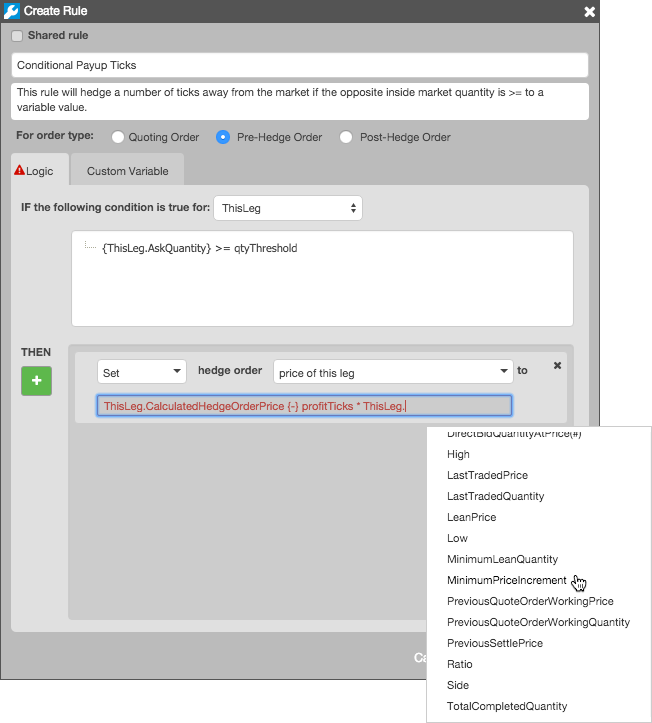

To complete the rule, you must add an action that will be performed when your conditions are met. Click the THEN add button to add additional actions. The list is based on the rule type you selected:
If Quoting Order is selected as the rule type, quote order appears as the rule. After you select Set in the first field, and you can select the following quote order actions in the second field:
Set up a pre-hedge rule for any hedge leg to be evaluated and trigger a rule before sending a hedge order into the market after a quoting order fill.
If Pre-Hedge Order is selected as the rule type, hedge order appears as the rule. After you select Set in the first field, and you can select the following hedge order actions in the second field:
When you select Forfeit in the first field and consider it as in the second field, the action allows you to forfeit the respective hedge order, but you must select one of the following options to instruct the Autospreader Server to update certain properties relating to hedge orders:
Note: If you wish to forfeit a hedge order but have the Autospreader Server "remember" and account for the un-hedged portion at the next hedging opportunity, use the action Set the hedge order quantity to... and set the hedge order quantity to zero. In this case, do not use the Forfeit the hedge order and consider it as... action.
Use a post-hedge rule to modify your order if the bid or ask you are leaning on starts to lose value. When Post-Hedge Order is selected as the rule type, you can select the following actions:
After you select an action, enter the action logic using the same leg identifiers and attributes available for conditions (the action text box also makes intellisense suggestions as you enter your logic). You can also use your custom variables in your action logic.

The logic you define for each action instructs the Autospreader Server to replace or modify its own calculated price and quantity values. Refer to Leg Attributes for a description of the leg attributes available in the Condition and Action text fields.
The following arithmetic expressions and operators can be used when entering your action logic: